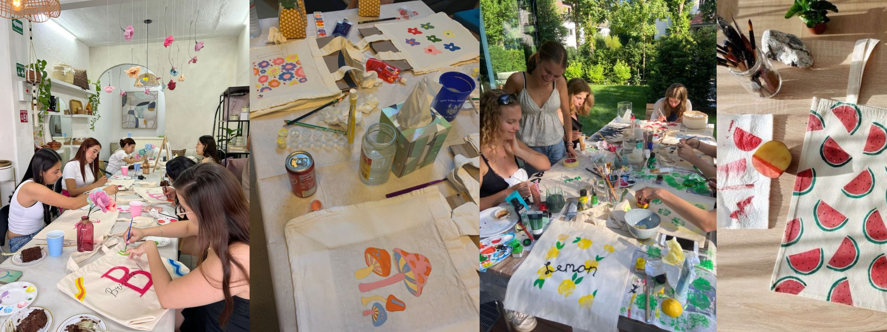

Magic Tote se creo en el año 2020, a partir de una cita de amigas, donde las cinco chicas tenian una bolsa ecólogica y a una se le ocurrió la idea de que en su proxima salida podrían pintar tote bags.
Las cinco amigas siempre quisieron tener un negocio, estaban hablando de sus planes a futuro mientras pintaban las bolsas, así que juntaron su sueño de negocio y el arte de pintar a mano.
Hasta este año 2024, Magic Tote cuenta con más de 30 jovenes que tienen el deseo de dejar su arte en bolsas ecólogicas.
Magic Tote personalizó al rededor de 2500 bolsas.
Regresar al inicio